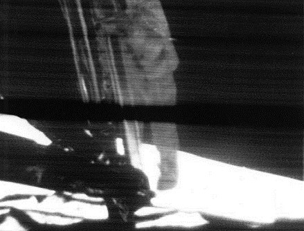
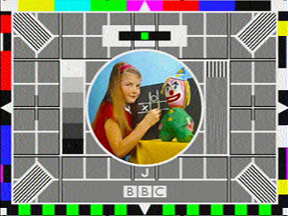
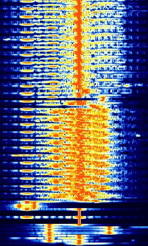

This is a personal Messaging Extraterresterial Inteligence(METI) project. I'm trying to send messages -data- into space. It might not lead to our destruction.
 The SSTV system used in NASA's early Apollo missions transferred ten frames per second with a resolution of 320 frame lines using less bandwidth than a normal TV transmission.Slow-scan television (SSTV) is a method for picture transmission used by amateur radio operators to transmit and receive images.
A technical term for SSTV is narrowband television. Analog broadcast television requires at least 6 MHz wide channels, because it transmits 25 or 30 picture frames per second (in the NTSC, PAL or SECAM color systems), but SSTV usually only takes up to a maximum of 3 kHz of bandwidth. It is a much slower method of still picture transmission. The signal frequency shifts up or down to designate brighter or darker pixels, respectively. Color is achieved by sending the brightness of each color component (usually red, green and blue) separately.
The most popular modes of SSTV are Robot, Scottie, and Martin. SSTV Robot was developed by Robot Research Corporation. Used to send images over HF(3-30MHz) and VHF(30-300MHz) frequencies.
 SampleRNN-generated SSTV
encoded sstv from original image